"""
File: cooling_mods_2m.py
Authors: Sasha D. Hafner and Frederik R. Dalby
Course: Modelling 2026
Description:
A module with a single function implementing a numerical
model for a cooling cup of coffee.
"""
import numpy as np
from scipy.integrate import solve_ivp
def cool(T_init, T_air, mass, area, h, time_range, dt, cp=4.2):
"""
Simulate coffee cooling using the RK45 method in `solve_ivp()`.
Parameters
----------
T_init : float
Initial coffee temperature (deg. C)
T_air : float
Ambient air temperature (deg. C)
mass : float
Mass of coffee (g)
area : float
Surface area of mug (m2)
h : float
Convective heat transfer coefficient (W m-2 K-1)
time_range : tuple
Start and end time (s), e.g. (0, 3600)
dt : float
Time step (s)
cp : float, optional
Specific heat capacity of coffee (J g-1 K-1), default 4.2
Returns
-------
dict with keys 'times' (s) and 'T_coffee' (degC)
"""
# Calculate constant, which does not change over time
con_cool = area * h / (cp * mass)
# Create an array of times
times = np.arange(time_range[0], time_range[1] + dt, dt)
# Define rates function
def rates(t, T_current):
return - con_cool * (T_current - T_air)
# And use the RK45 method with solve_ivp() defaults
res = solve_ivp(
rates,
t_span=time_range,
y0=[T_init],
t_eval=times
)
# Return solution
return {
'times': res.t,
'T_coffee': res.y[0, :],
}4 Heat Transfer
4.1 Introduction
Heat is a form of energy, associated with random motion of molecules or atoms. Heat transfer is concerned with the net movement of that energy from high temperature to low. Generally, heat transfer is associated with a temperature change, so measurement of temperature change is one way to quantify heat flow, but the change in temperature over time is also a common output from heat transfer models.
Heat transfer occurs in different ways that are modeled differently. These are called modes, and we will cover the following:
- Advection, transfer of heat energy due to bulk fluid movement.
- Conduction, diffusion of heat energy through solids or fluids.
- Convection, a more empirical mode to describe heat transfer between a surface and a fluid.
From our modeling perspective, we need to recognize the relevant mode of heat transfer in order to select an appropriate constitutive equation (see Section 2.4 for a review if needed). There are a couple fundamental concepts we’ll cover first. For a lot more information on heat transfer, see Theodore L. Bergman et al. (2013).
4.2 Advection
When a fluid flows into a location originally containing fluid with a different temperature, the temperature at that location or in that volume changes. The thermal energy has therefore changed as well. That is advection. It is a relatively easy process to understand and model.
Let’s take a tank, for example the water tank in Figure 4.1, with a fixed volume and fixed flow rate \(\dot{V}\) in and out of the tank.
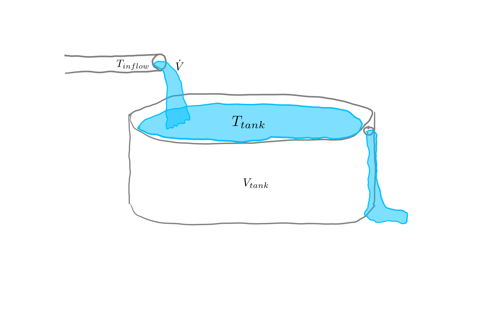
If the temperature of water flowing into the tank \(T_{inflow}\) differs from the current tank temperature \(T_{tank}\), then \(T_{tank}\) must be changing over time. This is advection. If \(T_{inflow}\) is higher than \(T_{tank}\), the tank temperature is increasing; if lower, \(T_{tank}\) is decreasing.
The fundamental advection equation for heat transfer needs a reference temperature, which we’ll call \(T_{ref}\) here. The value used will not matter in our work, because it should always cancel in our applications because our domain will have constant volume. Advection becomes trickier when we don’t have a constant volume (or mass) within our model domain or control volume.
\[ \dot{Q} = \dot{V} \cdot{\rho} \cdot c_p \cdot (T - T_{ref}), \tag{4.1}\]
where \(\dot{Q}\) is energy flow in W, \(\rho=\) fluid density in \(\kgpmc\), and \(c_p=\) specific heat capacity (\(\kJpkgpK\)). (Specific heat capacity is discussed more below in Section 4.7.) That, Equation 4.1, is the fundamental constitutive equation for advection. For our tank example, it would be applied to flow in and flow out, both based on the same constant value \(\dot{V}\). Then net energy flow would be calculated by difference, giving:
\[ \dot{Q}_{in} - \dot{Q}_{out} = \dot{V} \cdot{\rho} \cdot c_p \cdot (T_{inflow} - T_{tank}). \tag{4.2}\]
Do you see how \(T_{ref}\) drops out?
As long as density and specific heat capacity are constant (we will always assume they are in this book), we can always derive an equation for the rate of temperature change by recognizing that \(dT = \frac{\dot{Q}}{\dot{V} \cdot{\rho} \cdot c_p}\). Start with substitution:
\[ \frac{dT}{dt} = \frac{\dot{V} \cdot{\rho} \cdot c_p \cdot (T_{inflow} - T_{tank})}{V \cdot{\rho} \cdot c_p}. \]
Then simplify for
\[ \frac{dT}{dt} = \frac{\dot{V} \cdot (T_{inflow} - T_{tank})}{V}. \tag{4.3}\]
Advection becomes trickier when we don’t have a constant volume (or mass) within our model domain or control volume. Fortunately, most models do, and we won’t cover those other cases.
Another simple advection scenario is a shown in Figure 4.2.
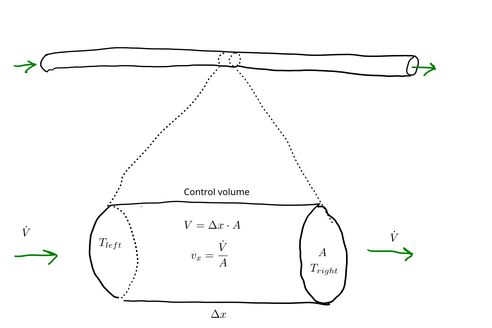
The small section at the bottom can be called a control volume–a hypothetical volume used for deriving flow equations. We can treat that control volume like the tank above (Figure 4.1, Equation 4.2). The instantaneous rate of net energy flow into the control volume by advection is:
\[ \dot{Q} = \dot{V} \cdot{\rho} \cdot c_p \cdot (T_{left} - T_{right}), \tag{4.4}\]
where \(T_{left}\) and \(T_{right}\) are at the boundaries of the control volume. How about the rate of temperature change? That is what we are really after.
\[ \frac{dT}{dt} = \frac{\dot{Q}}{V \cdot {\rho} \cdot c_p} \tag{4.5}\]
Or, recognizing that \(V = \Delta x \cdot A\),
\[ \frac{dT}{dt} = \frac{\dot{Q}}{\Delta x \cdot A \cdot {\rho} \cdot c_p} \tag{4.6}\]
And we can then substitute the RHS of Equation 4.4 for \(\dot{Q}\) in Equation 4.5.
\[ \frac{dT}{dt} = \frac{\dot{V} \cdot{\rho} \cdot c_p \cdot (T_{x=0} - T_{x=\Delta x})}{\Delta x \cdot A \cdot {\rho} \cdot c_p} \tag{4.7}\]
And simplify Equation 4.7, recognizing that \(\frac{\dot{V}}{A} = v_x =\) superficial fluid velocity:
\[ \frac{dT}{dt} = v_x \cdot \frac{(T_{x=0} - T_{x=\Delta x})}{\Delta x}. \tag{4.8}\]
And that quotient on the RHS of Equation 4.8 becomes the definition of a derivative as \(\Delta x\) approaches 0, so the associated ODE is:
\[ \frac{dT}{dt} = v_x \cdot \frac{dT}{dx}. \tag{4.9}\]
Equation 4.9, is actually pretty intuitive. It says that the rate of temperature change at a fixed location is equal to the temperature derivative over space and the rate at which fluid flows over that same space.
Equation 4.9, along with Equation 4.1, will together suffice for the constitutive equations for advection in most of the systems we’ll encounter in this book. For others, derivation of an advection equation is pretty simple.
In our pipe conceptual model, we’ve implicitly assumed that radial position has no bearing on transfer. In reality,
In heat transfer models (as well as mass transfer), it is common to work with flow rates normalized by the cross-sectional area of the space through which the flow is moving, i.e., heat flux. Our heat flow units are typically W and heat flow \(\Wpms\). One reason to use flux is because it gives us more general models that are easy to apply at different scales without making any changes. For example, thinking about the second advection example above, the pipe (Figure 4.2), does the diameter of the pipe play any role?
Well, the heat flow at one location, say \(x=0\) is:
\[ \dot{Q}_{x=0} = \dot{V} \cdot{\rho} \cdot c_p \cdot (T_{x=0} - T_{ref}). \tag{4.10}\]
If we divide by area \(A\),
\[ q_{x=0} = v_x \cdot{\rho} \cdot c_p \cdot (T_{x=0} - T_{ref}), \tag{4.11}\]
we get an equation that does not depend on pipe size, but only the superficial fluid velocity. So for a given velocity, the diameter is immaterial. (Of course this is true only if our assumption about uniform radial profile, i.e., a 1D system, is accurate.)
…
((Do we need to start with integration to go from flux to dT/dt already here? Kind of have some above on advection accidentially))
4.3 Conduction and Fourier’s law
Conduction is the transfer of heat through solids and fluids by random motion of molecules or atoms (electrons also play a role, at least in metals). It can also be called thermal diffusion.
The fundamental heat transfer law, the relevant constitutive equation, is called Fourier’s law, Equation 4.12.
\[ q = -k \cdot \frac{dT}{dx} \tag{4.12}\]
Equation 4.12 says that the heat flux in the \(x\) direction is proporational to derivative of temperature with respect to \(x\), or the temperature gradient. The two–heat flux and temperature gradient–are linked through a proporationality constant called \(thermal conductivity\), which typically has units of \(\WpmpK\) and depends strongly on the substance through which heat is diffusing. Thermal conductivity is high for metals (around \(10^2\) \(\WpmpK\)), low for gases (around \(10^{-1}\) \(\WpmpK\), or about 1000-fold less), and somewhere in the middle for other materials.
So Equation 4.12 depends on material properties and a state variable–temperature, or more specifically, the temperature gradient. This is a characteristic of constitutive equations.
Heat energy flows via conduction from high temperature to low temperature, and this is ensured by the negative sign in front of thermal conductivity. That simple concept underlies a simple tool for inferring heat transfer and temperature change from temperature differences, gradients, or derivatives.
A temperature profile is a graphical representation of temperature over space, and it can be useful for understanding Fourier’s law. For example, Figure 4.3 shows the temperature profile of a wall with one fixed temperature at the left surface, \(T_o\), where \(o\) is for outside, and another at the right surface, \(T_i\). It is common to show space horizontally–here the \(x\) dimension–and temperature vertically.
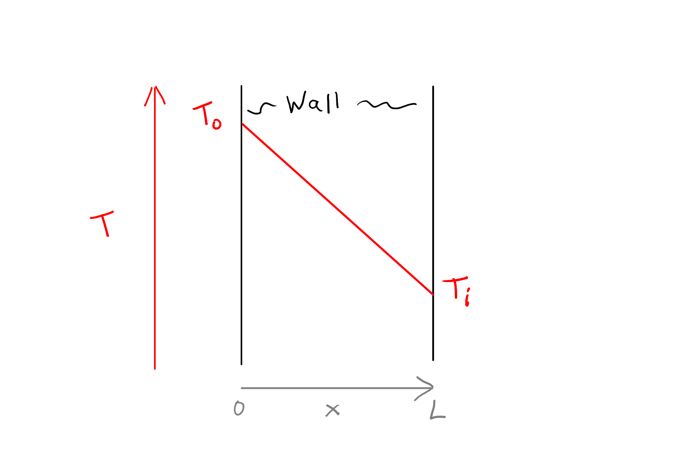
Figure 4.3 and similar simple sketches are best for one dimensional (1D) problems where the temperature varies only over one dimension and is uniform in all others. Here, that means that the profile for 1 mm from the bottom of the wall is the same as the one at 2 m–moving up or down has no effect on the profile. In fact, Figure 4.3 does not really show any vertical dimension, or wall height. The vertical position of a point on the red \(T\) line shows the temperature at a particular depth in the wall.
The slope of the red line in Figure 4.3 is the derivative of temperature with respect to the \(x\) dimension. Here, because the red \(T\) line is straight, the derivative is uniform with \(x\), which is characteristic steady-state for plane walls. Why? Well, let’s apply Equation 4.12. Let’s say the temperature difference is 10 \(\degC\) over 0.2 m, so the average gradient is therefore 50 \(\degCpm\). And thermal conductivity is exactly 1 \(\WpmpK\). Applying Equation 4.12, the heat flux is 10 \(\Wpms\) at all locations. So for any point in the wall between \(x=0\) and \(x=L\), heat energy is travelling at a fixed rate to the right.
Remember the relationship between heat flux and heat flow: \(\dot{Q} = A \cdot q\). For a plane wall then, one with uniform cross-sectional area and thickness, the heat flow going into any control volume is exactly equal to the heat flow leaving that volume (Figure 4.4).
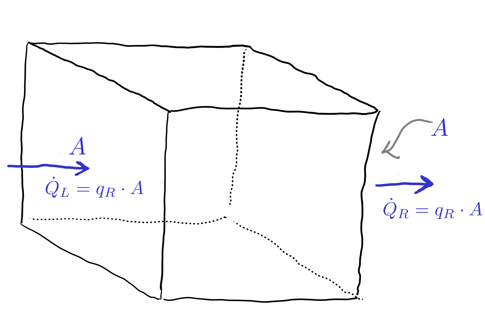
OK, so what does all this mean about cases where the temperature gradient is not linear, i.e., the temperature derivative varies over space? For example, see Figure 4.5.
Well, the nonlinear temperature profile means the temperature derivative \(\frac{dT}{dx}\) is not constant over space, which means that the rate of heat transfer, the heat flux really, by convection, is not constant over space either. At the left side, there is a positive temperature derivative, so the heat flux is negative, or to the left. Alternatively, we can just see that the temperature is increasing from the edge in, and because heat flows from high to low temperature through conduction, heat flow must be flowing to the left. Get used to this intuitive approach–it is helpful for model implementation, debugging, and verification. Using the same concepts, we can see there is heat flow to the right at the right edge. Together this means the wall must be losing heat. It is not at steady state unless there is some source of heat within the wall. In fact, downward curvature in a temperature profile in a plane wall can always be used to infer that a wall is either cooling or, if at steady-state, has an internal heat source.
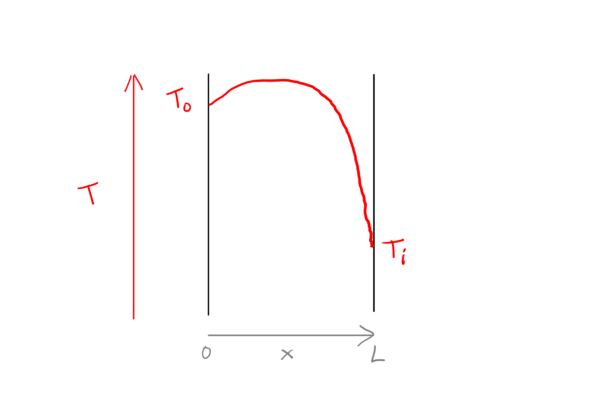
With a linear profile, as in Figure 4.3, Fourier’s law can be expressed as
\[ q = -k \cdot \frac{\Delta T}{L}, \tag{4.13}\]
where \(\Delta T\) is the temperature difference across the wall (\(T_o - T_i\)) and \(L\) is the wall thickness. This works because the gradient or derivative is the same everywhere, so can be calculated from the overall difference \(\Delta T\) and \(L\). For our work in this book, this is the fundamental form of Fourier’s law that we will apply. We’ll see it a lot more in the following sections.
With this approach (Equation 4.13) we can also use a resistance concept. We will define resistance \(R\) as \(\frac{L}{k}\). For a fixed wall thickness, resistance is inversely proporational to thermal conductivity. So the analog to Equation 4.13 is Equation 4.14:
\[ q = \frac{\Delta T}{R}. \tag{4.14}\]
Note that the term resistance and the symbol can be defined for total heat flow \(\dot{Q}\) instead of heat flux \(q\) in other sources. Below, we will see how the resistance approach can be used to combine resistance from multiple layers in a composite wall, even including convection.
4.4 Convection and Newton’s law of cooling
If you are bald and go outside in Canada in the winter without covering your head (Figure 4.6) the mode of heat loss that you experience is called convection. The term is, unfortunately, used in some different ways, but we’ll follow Theodore L. Bergman et al. (2011) and use it for a combination of conduction and advection that causes heat transfer between a fluid and a surface. Temperature gradients driving convection are commonly shown like Figure 4.7. It is common to use the symbole \(T_\infty\) for the bulk fluid temperature, “far away” from the surface. In practice this means far enough away to not be influenced by the surface temperature, or outside of the fluid boundary layer.
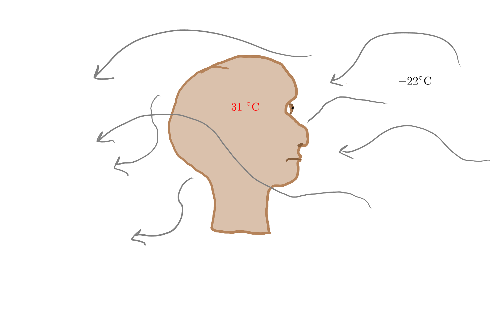
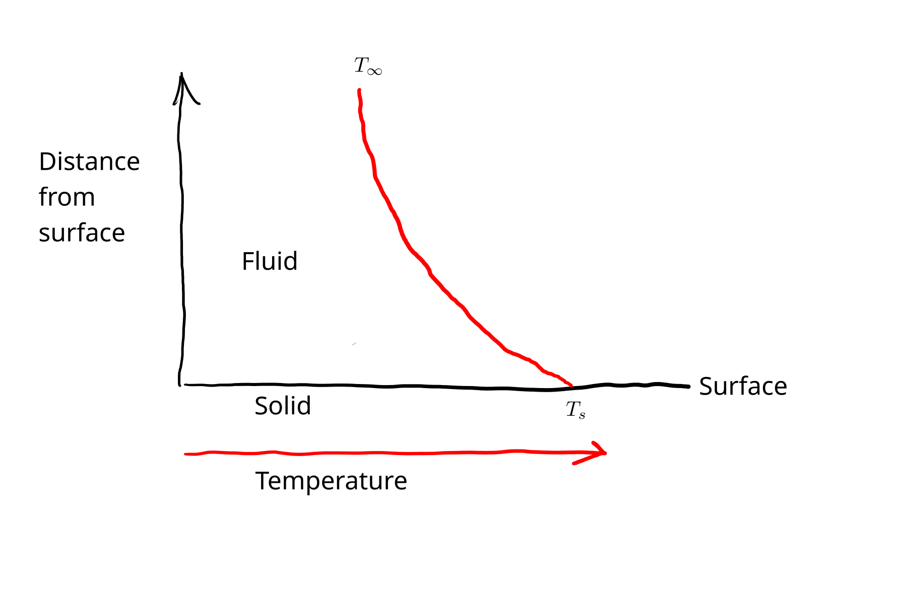
The constitutive equation for convective heat transfer is called Newton’s law of cooling:
\[ q = h \cdot (T_s - T_\infty). \tag{4.15}\]
It is a simple, phenomenological, relationship that posits that the rate of heat loss is proportional to the temperature difference (note that distance is not involved) between the surface temperature \(T_s\) and fluid temperature \(T_\infty\) and some proportionality constant \(h\) called the convection heat transfer coefficient. We’ll often call \(h\) a shorter name: convection coefficient. It depends on the physical properties of the fluid as well as whether and how it is flowing–the speed and turbulence. We’ll use tabulated values or guesses in our work.
As with conduction, we can use a resistance-based form for Newton’s law:
\[ q = \frac{T_s - T_\infty}{R}. \tag{4.16}\]
4.5 Resistance in series
With multiple layers in series, in a composite wall for example as in Figure 4.8, the multiple layers together influence heat flow.
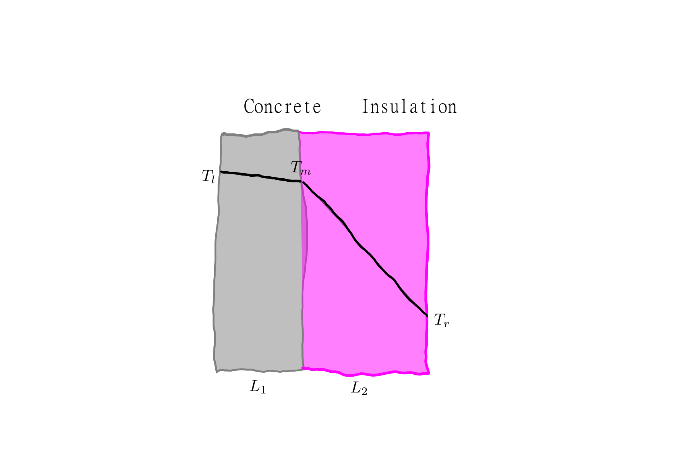
It turns out that multiple sources of resistance can easily be combined by summing resistances. This can be shown with a little bit of simple symbolic math. If the individual values for \(k\) and \(L\) are known, then the overall resistance is:
\[ R = \frac{L_1}{k_1} + \frac{L_2}{k_2} + ... \frac{L_n}{k_n}. \tag{4.17}\]
Although intermediate temperatures, like \(T_m\) in Figure 4.8, could be calculated, only the overall temperature difference, \(\Delta T = T_l - T_r\) is needed for application of Equation 4.14.
Looking at Equation 4.16, you might be able to see that convection and conduction together in series, as in Figure 4.9, can also be combined using the same approach.
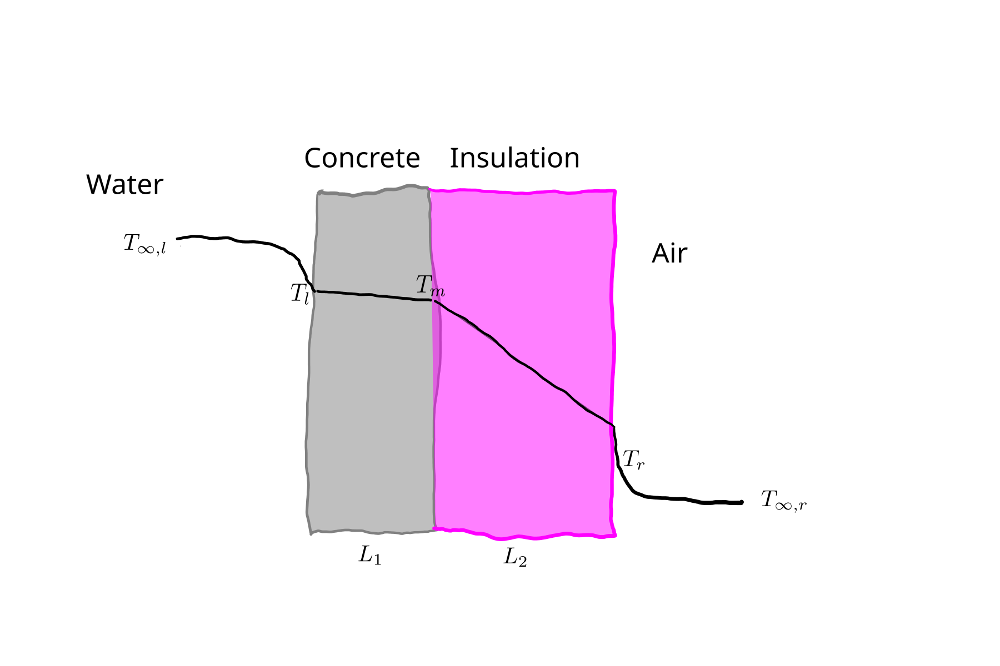
For example, with \(n_d\) layers with conduction and \(n_v\) with convection, \[ R = \frac{L_1}{k_1} + \frac{L_2}{k_2} + ... \frac{L_n}{k_{n_d}} + \frac{1}{h_1} + \frac{1}{h_2} + ... \frac{1}{h_{n_v}}. \tag{4.18}\]
For calculating heat flux, the overall temperature difference \(\Delta T\) is divided by resistance \(R\). It is a matter of preference to use instead the inverse of \(R\). Of course, for a single layer, the inverse of \(R\) is \(\frac{k}{L}\) or \(h\). For multiple layers, the quantity is called overall heat transfer coefficient and the symbol \(U\) is used, so,
\[ U = \frac{1}{\frac{L_1}{k_1} + \frac{L_2}{k_2} + ... \frac{L_n}{k_{n_d}} + \frac{1}{h_1} + \frac{1}{h_2} + ... \frac{1}{h_{n_v}}}. \tag{4.19}\]
And for flux,
\[ q = U \cdot \Delta T. \tag{4.20}\]
Remember that \(\Delta T\) is the overall temperaure difference. So for Figure 4.9, for example, \(\Delta T = T_{\infty, l} - T_{\infty, r}\). And for Figure 4.8, \(\Delta T = T_{l} - T_{r}\). Does it seem inconsistent, that both expressions could be true? Really the two figures could be different interpretations or the same physical system. The resolution comes from defining \(U\) correctly (it is different for the two) and using the appropriate temperatures. We could, in fact, use \(\Delta T = T_{l} - T_{r}\) for the system in Figure 4.9, but then (1) should not include the fluids in the calculation of \(U\) and (2) must use the temperaures at the fluid/solid interfaces (\(T_l\) and \(T_r\)) for calculating flux. If the fluids actually do contribute significant resistance to heat flow, those interface temperatures could be quite different from the bulk fluid temperatures \(T_{\infty...}\), and difficult to determine.
This general approach is quite useful and we’ll use it extensively. Remember that it is defined for steady-state conditions–otherwise we cannot assume that conduction temperature gradients are linear or really that convective heat loss is directly proportional to the temperature difference. But the approach can still be applied to non-steady-state conditions, as long as the heat energy stored within those zones with a gradient is small compared to the overall system.
4.6 Parameter values
In modeling, there are two ways to get parameter values: from (1) theory or (2) measurements. For example, for the system in Figure 4.9 we could use individual \(k\) (from compilations by material) and \(h\) (from published correlations and fluid properties) values and combine them as in Equation 4.19 to estimate \(U\). Or, we could use some measurements of heat flow and temperature to estimate best-fit or empirical parameter values. Really the two approaches are not completely separate. After all, the starting parameters from the theoretical approach often originally come from fitting to measurements. For this book and course, we’ll add (3) from guesses. Using a very rough estimate based on values in ?sec-parameter-values combined with a gut feeling is perfectly acceptable for this course and for the examples and problems in this book.
4.7 Linking equation
The constitutive equations given above describe the rate of heat energy transfer. Ultimately it is typically temperature we are interested in modeling. And furthermore, it is temperature that determines the rate of transfer. So we need a way of linking heat energy to temperature. This was done above in Section 4.2, but in general is applicable to any heat transfer model. In general,
\[ \dot{Q} = \frac{dT}{dt} \cdot c_p \cdot M, \tag{4.21}\]
where \(M =\) the material mass.
4.8 Example: lumped-parameter model with all modes
Let’s extend our coffee model as an application of some of the concepts explored in this chapter. Figure 4.10 is a revised model sketch. Now we will explicitly consider heat loss through two different routes: the exposed coffee surface (through two fluid layers) and the mug sides (two fluids and one solid wall). We have a choice of using more fundamental parameter inputs or more empirical. We’ll go with the more empirical route, where only \(U_t\) (t for top) and \(U_s\) (s for side) are specified.
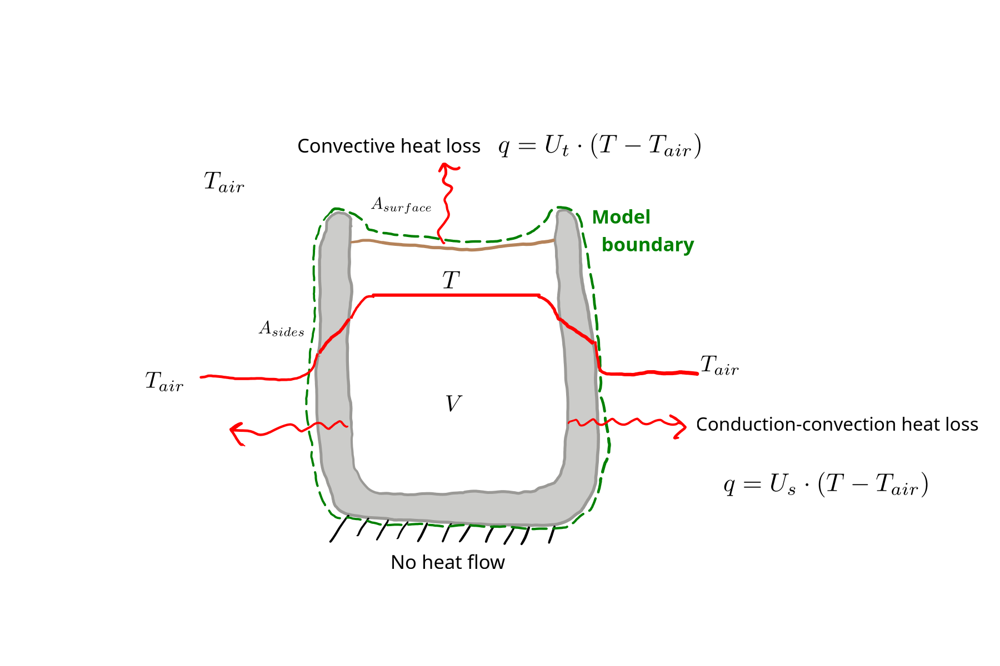
Then, to use the model, we first import the module we defined and then run the function, like this:
"""
File: cool_pred_2m.py
Authors: Sasha D. Hafner and Frederik R. Dalby
Course: Modelling 2026
Description:
Application of the `cool2m()` model function.
"""
import cooling_mod_2m as cm
pred = cm.cool2m(
T_init=80,
T_air=20,
mass=300,
area_t=0.010,
area_s=0.016,
U_t=75,
U_s=10,
time_range=(0., 60 * 60),
dt = 5 * 60
)
print(pred){'times': array([ 0., 300., 600., 900., 1200., 1500., 1800., 2100., 2400.,
2700., 3000., 3300., 3600.]), 'T_coffee': array([80. , 24.62564548, 20.35619594, 20.02843584, 20.00117957,
19.99900997, 20.00571883, 19.99383797, 19.99184518, 20.01921335,
20.00664872, 19.99496257, 20.00412985])}import matplotlib.pyplot as plt
plt.plot(pred['times'] / 60, pred['T_coffee'])
plt.xlabel('Time (min)')
plt.ylabel(r'Predicted coffee temperature $(^\circ\mathregular{C})$')
plt.show()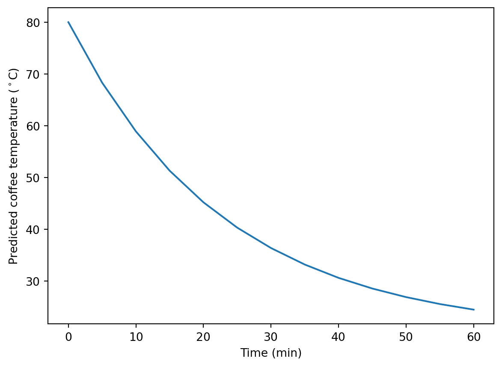
Bergman, Theodore L.., David P. DeWitt, Frank P. Incropera, and Adrienne S.. Lavine. 2013. Principles of Heat and Mass Transfer : International Student Version. Seventh edition. Hoboken (N.J.): John Wiley \& Sons.
Bergman, Theodore L., Adrienne S. Lavine, Frank P. Incropera, and David P. DeWitt. 2011. Introduction to Heat Transfer. John Wiley \& Sons.